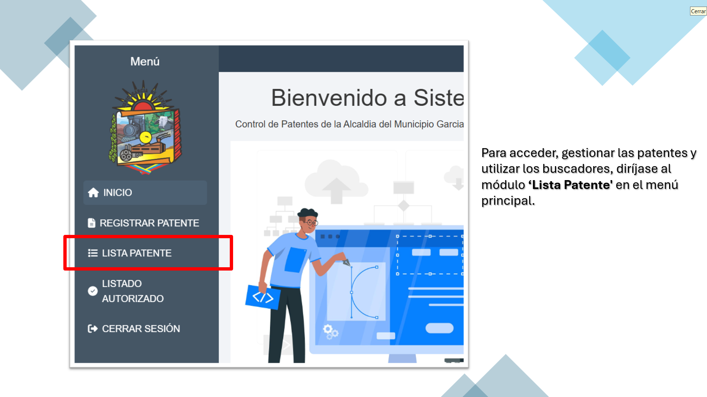
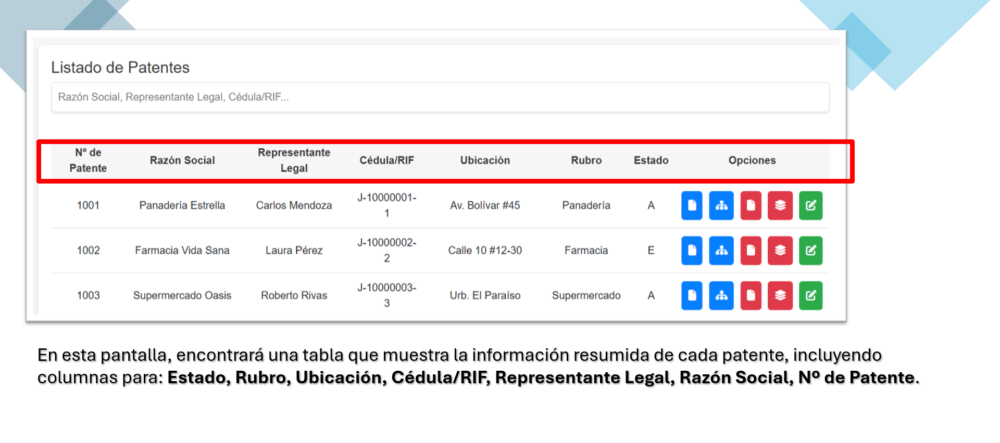
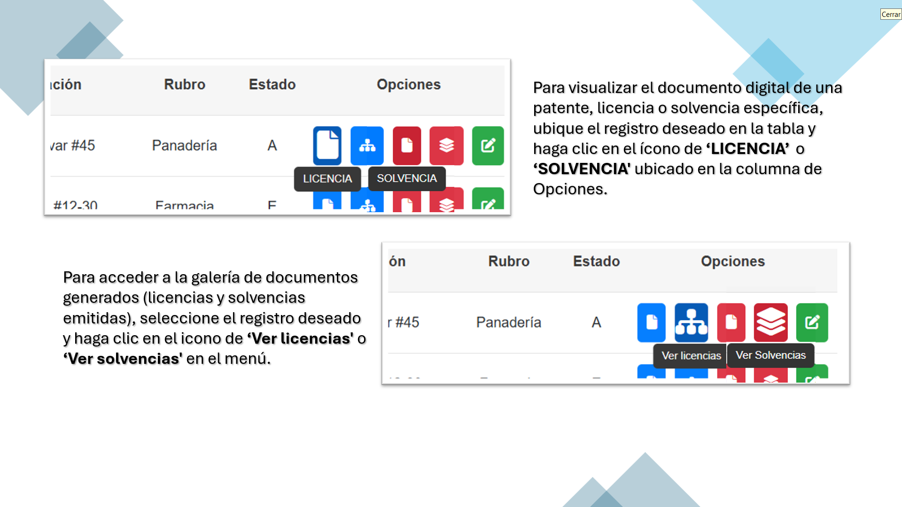
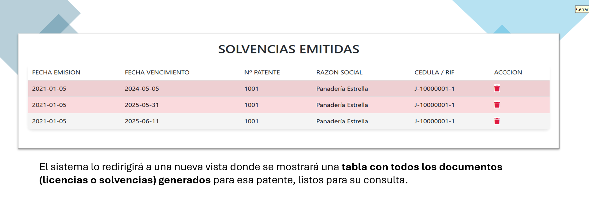
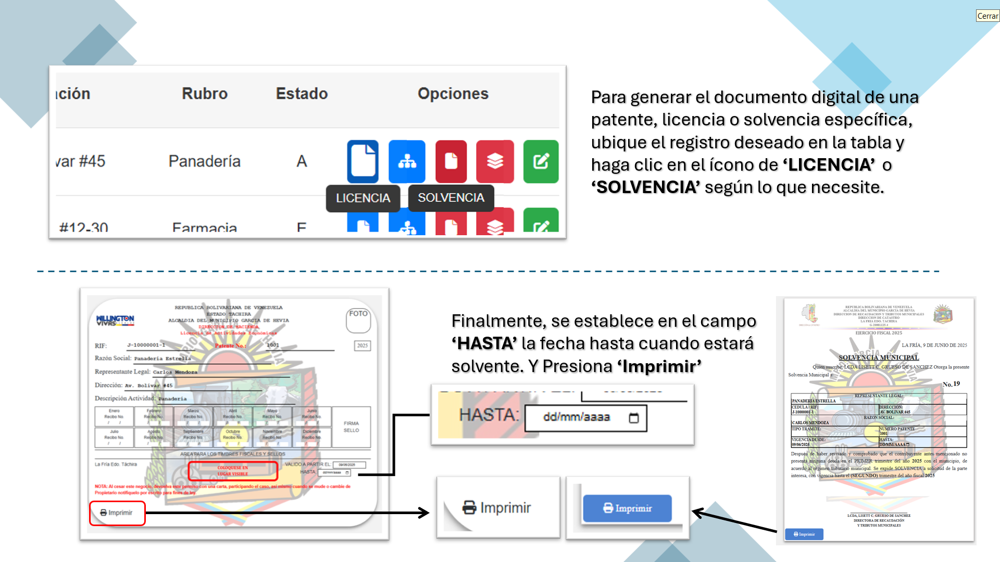
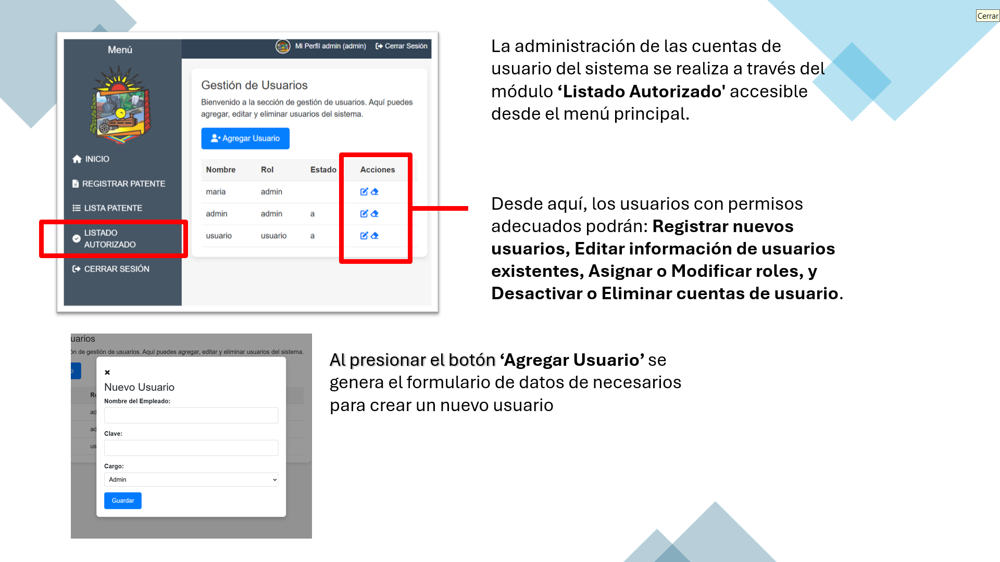
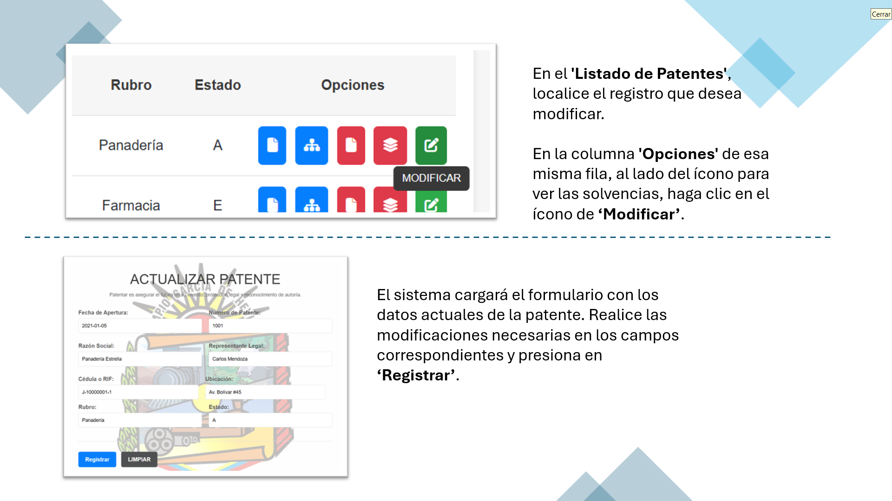

¿Cómo registro una patente?
▼
¿Cómo puedo ver todas las licencias/solvencias de un representante?
▼
   
¿Cómo genero una licencia?
▼

¿Cómo registro un usuario?
▼

¿Cómo modifico o edito una patente existente?
▼
